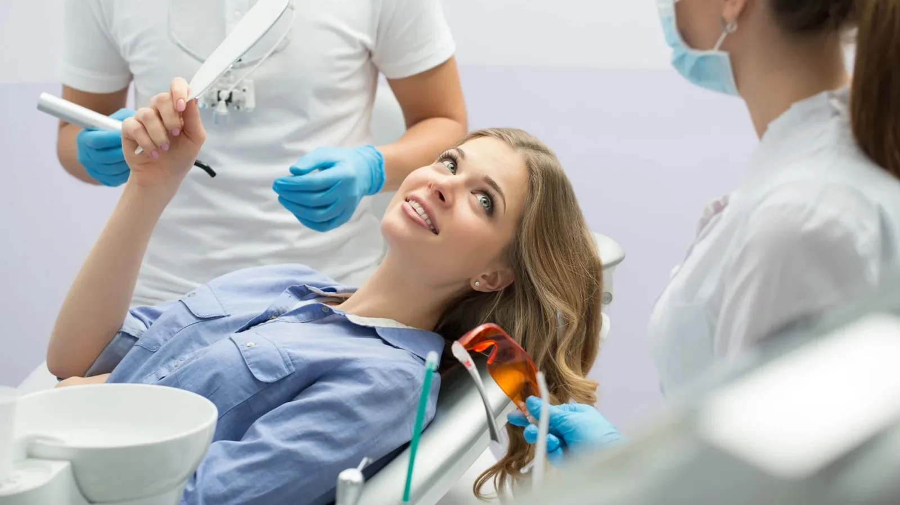

Our services
Rebuilding teeth that have taken a beating.
Teeth crack, wear down, decay and occasionally have to come out. Restorative dentistry is the work of putting things back — restoring the shape, the function and the appearance of a tooth so you can eat and speak without thinking about it.
Dr Meg’s regional background means a broad restorative range: crowns, bridges, molar root canal treatment, partial dentures and extractions, including surgical cases.

Laboratory-made, not milled in the chair
Crowns and bridges here are made by a dental laboratory rather than milled chairside on the day. Same-day crowns are convenient, but Dr Meg’s view is that a technician working with the right materials and time produces a better result in fit, contour and appearance. That means two appointments and a temporary crown in between, which she considers a fair trade.
Saving a tooth where it is sensible
The general principle is to keep your own tooth where keeping it is realistic. Root canal treatment often makes that possible, and Dr Meg carries out root canal treatment including on molars. Some cases are better managed by an endodontist, and where that is true she will tell you rather than push on.
Where a tooth genuinely cannot be saved, we will explain why, what the extraction involves, and what your options are for replacing it.
What sits under restorative dentistry
Dental Crowns
— laboratory-made crowns for cracked, worn or heavily restored teeth
Dental Bridges
— fixed replacement of a missing tooth using the neighbouring teeth
Root Canal Treatment
— treatment of infected or damaged nerve tissue, including molars
Partial Dentures
— removable replacement of several missing teeth
Tooth Extractions
— simple and surgical removal where a tooth cannot be kept
Full dentures are not currently provided. Implants and implant bridges are covered under Dental Implants.
Common questions
That depends on the tooth, your bite, your grinding habits and your home care. Crowns are durable but not permanent, and no dentist can put a number on it for your particular tooth. Dr Meg will give you a realistic picture at your assessment.
Usually saving it, if the tooth has enough sound structure and healthy bone underneath. Sometimes not. It is a judgement call, and we will lay out the costs, the risks and the likely lifespan of each option before you decide.
Yes. Restorative treatment is planned in writing with staged costs before anything starts.
Because a technician working with a full range of materials and adequate time produces a better result in fit, contour and appearance. It means two appointments and a temporary in between, which Dr Meg considers a fair trade for something you expect to keep for years.
Not as a matter of course. A sound filling that is sealing well is generally better left alone, including amalgam. We replace restorations that have failed, are leaking, or are undermining the tooth around them.
It depends on the treatment. A filling is usually one. A crown or bridge is two. Root canal treatment is one or two, plus a further visit if a crown follows. You will be given the expected number at your planning appointment.